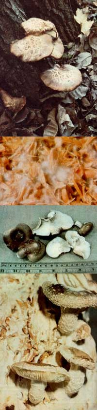

In Japan, the shiitake mushrooms - formerly reserved for royalty - are now grown in large quantities on harwood logs, considered an integral part of that country's forest industry, and exported worldwide by the millions... When your mushroom compost is covered with a ""spawn run"" of white mycelium, as in this close-up, it's ready to be exposed to light... The ruler will give you some idea of the size of these strong-flavored mushrooms when they're ready for eating... These clumps of mature fungi growing on mycelium-coated compost will be harvested to make room for a new crop.